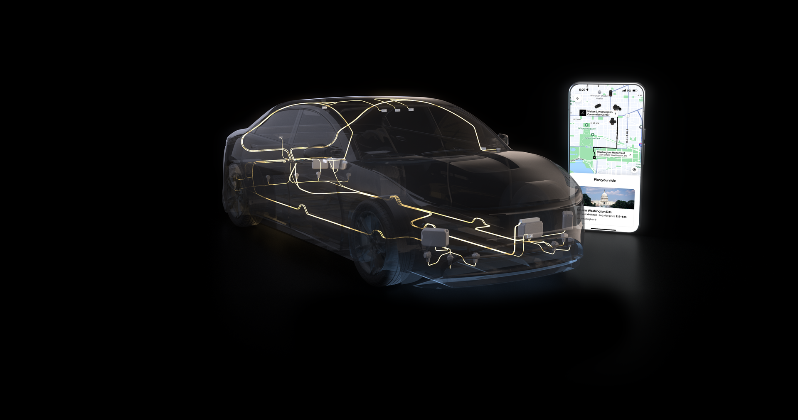

NVIDIAはUberとの提携により、グローバルな自律走行車両の拡大を支援すると発表した。Stellantis、Lucid、Mercedes-Benzも、NVIDIA DRIVE AVプラットフォームとDRIVE AGX Hyperion 10アーキテクチャを活用するLevel 4エコシステムに参加する。
Hyperion 10は、車両をL4-readyにするための計算・センサー参照アーキテクチャとして提示されている。自動車メーカーと開発者は、この基盤を使って安全でスケーラブルなAI定義フリートを構築できる。
この発表の核心は、NVIDIAが単なるSoCベンダーではなく、車載計算、センサー参照設計、AVソフトウェア、Cosmosによるデータ生成・評価基盤をまとめたL4エコシステムの土台を提供しようとしている点にある。
NVIDIAとUberは、Avride、May Mobility、Momenta、Nuro、Pony.ai、Wayve、WeRideなどを含むLevel 4エコシステムを支援し続ける。Uberの需要ネットワークとNVIDIAのAV基盤を組み合わせることで、複数OEM・複数地域にまたがるRobotaxi展開を加速する狙いである。